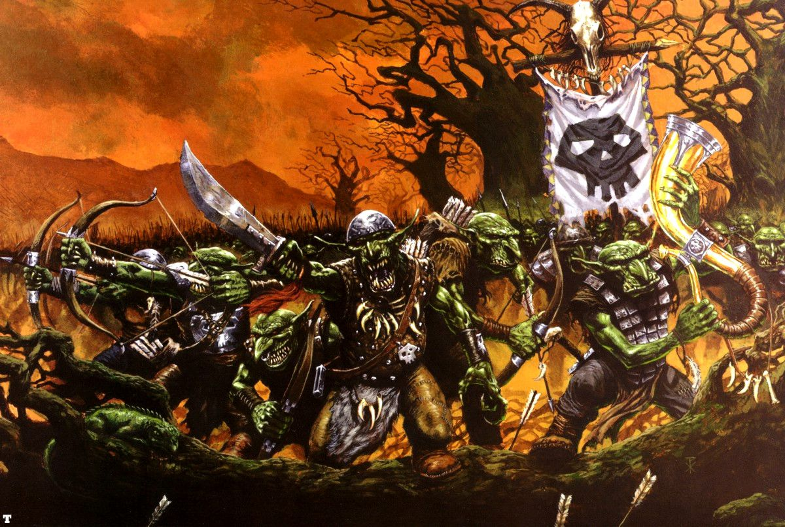
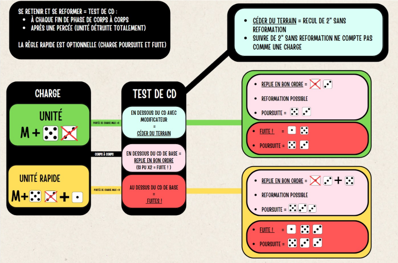

Introduction: Inspiré par Embackup et son document récapitulatif : SeqWarfoEmbackO&Gdn. Voici un reformatage du document permettant une meilleur lecture. Les mots souligner renvoi à la règle tandis que des menus déroulants sont signalés sur le côté par un triangle à gauche.
D’autres documents peuvent s’avéré utile comme le Aide de jeu v2.2 par TheGuest.
Remarque sur le document: Le symbole [§] dans les bulles de règles signale que la description a été réccourcie ou modifier tout en essayant de garder la logique de la règle. De plus, les unités peuvent être labelliser par couleur Orques / Gobelins / Orques noires / Sangliers / Loups / Squig / Vouivre.
Début et mise en place de la partie
Pour une vue exhaustive des scénarios il est possible de ce référer à WTOW - Compilation Scénarios Officiels V2.0.pdf.
- Mise en place du champs de bataille: Placer 1 élément de terrain par section de 12” de longueur de table (arrondi à la section de 12” la plus proche). Par exemple, si la longueur de table est de 72’ , six éléments de terrain devraient suffire.
- Sorts & Génération De Sorts: Les joueurs génèrent aléatoirement des sorts pour chacun de leurs Sorciers (p 319).
- Déploiement Alterné : le gagnant du jet dé choisit quel joueur déploie la première unité.
- Déterminer qui a le 1er tour : le gagnant du jet dé choisit qui commence en 1er.
I. Phase de Stratégie
1) Début du Tour
Stupidité ➜ si non engagé, faire un test de commandement égale au propre (Cd 5) ou présence charismatique (Voir I, 4.2) marquer d’un token la stupidité pour la phase de mouvement aléatoire en cas d’échec.
Éventuel Lâcher des fanatiques à 3’’ de son régiment (HS p 26)
Mouvements aléatoires des Vortex, comme Pied de Gork, et résolution des blessures (p 95,107) (si pertes éventuelle =Test de panique voir phase de tir 5).
2) Commandement
Waaagh! une fois par partie ! éventuel des Chefs orques sur un test de commandement ➜ donne
relance des 1à la touche valable sur le round complet (HS p46).Cri de ralliement 1 fois par Chefs peaux verte à portée de commandement des unités fuillardes (p 176 tests de ralliement gratuit avant phase I.4).
Boire les potions éventuelles (p 342).
3) Conjuration
Dissiper les sorts restés en jeu si portée (penser aux objets cabalistique bonus comme Effigie de Mork, (HS p 44) et dissipation fatidique (p 110).
Lancer les Enchantements et Maléfices. Notamment l’urticaire ultime / Lever D’La Mauvaise Lune / L’Éklat Du Soleil Maléfikk / On Y Va ! / Malédiction de Mork. Ne pas oublié la Loi du nombre : Si chaman orque dans pack a PU 10 ➜ +1 au lancement de sort (HS 14).
Détails autres Enchantements et Maléfices possibles
- Illusionnisme > (p 330) E Robe étincelante
- Elementalisme > (p 326) 4 Rempart tellurique
- Bataille > (p 321), 5 Bouclier de Chêne Lancer les Maléfices :
- Illusionnisme > (p 330) 4 Convocation déconcertante, 6 Mirage Miasmique
- Elementalisme > (p 326), E Appeler la tempête
- Bataille > (p 321), 2 Malédiction d’attraction des flèches, 6 Malédiction de couardise.
4) Rallier les Troupes en Fuite
Chaque unité en fuite effectue un test de commandement (Cd) pour tenter un ralliement (penser à présence charismatique).
- i) Si le nombre de figurines est
< 50%alors -1 CD - ii) Si
< 25%alors double 1 nécessaire - iii) Si il y a un musicien alors +1 CD
- iv) La GB permet une relance à 12 pouces si le ralliement est raté (Tenez vos rangs p203),
- v) Présence Charismatique du général donne aux unités la caractéristique de commandement (p203).
- vi) Bande de guerre permet d’augmenter la capacité de Cd d’une unité en additionnant ses bonus de rang en jeu(p 180).
Le résultats va déterminer le comportement de l’unité :
- Si échec, marquer d’un token fuite pour la phase de mouvement obligatoire.
- Si réussite l’ unité est rallié ( -1 aux tirs ( se déplacer et tirer, sauf ), gagne une reformation gratuite et ne peut charger ni ce déplacer.
Tableau avec les principaux commandements
tableau avec les principaux commandements
II. Phase de Mouvement
1) Déclarer les Charges & Réactions aux Charges (p119)
| Orque | Gobs | Orque noir | Sanglier* | Araignée* | Loup* | Vouivre* | Squig |
|---|---|---|---|---|---|---|---|
| M4>10 (7) | M4>10 (7) | M4>10 (7) | M7>16 (14) | M7>16 (14) | M9>18 (15) | M9>18 (15) | 3D6 |
Tableau des portées de charge. Le résultat entre parenthèse prends en compte le maximum de vraisemblance en prenant en compte les rapides.
Résumé Déclaration Charges & leurs Réactions
Le joueur actif déclare ses charges, en indiquant lesquelles de ses unités chargent, et quelle unité ennemie chaque charge :
Une unité qui charge doit pouvoir tracer une ligne de vue vers l’unité qu’elle veut charger.
Les unités en Colonne de Marche, engagées en combat ou en fuite ne peuvent pas charger.
Appliquer la Règle impétueux
Réactions aux Charges : Quand elle est chargée, une unité peut déclarer une réaction à la charge :
Tenir sa Position : L’unité s’apprête à recevoir la charge.
Tenir sa Position & Tirer : L’unité utilise ses armes de tir contre l’unité en charge. On ne peut pas déclarer cette réaction si la distance entre les unités est inférieure à la caractéristique de Mouvement de l’unité en charge.
Fuite : L’unité fuit directement à l’opposé de l’unité en charge.
Points à prendre en compte à cette phase
- Déclarer toutes les charges c’est à dire vérifier la portée en prenant comme valeur M(mouvement) + 6 (cad min 1’) avec tous les modificateurs précédemment évoqué. Ne pas oublier de payer les roues obligatoires de charge dans la portée pour que la charge soit réellement possible.
- Appliquer la Règle impétueux (p 172) pour les peaux vertes commun l’unité doit faire un test de commandement (overview O&G CD). Si bulle de 6 à côté d’un orque noir, elle peut re-roll ce test FAQ 1.5.2. En cas d’échec, l’unité doit déclarer une charge.
- Attention : le test de CD ne prends pas en compte le bonus bande de guerre (faq 1.5.1 p4).
- Peur des elfes [Gobelins]: Si déclaration de charge contre une unité qui fait peur ➜ Test de Cd : en cas d’échec l’unité reste sur place, sinon ➜ charge non modifier.
- Pour les unités rapide [Vouivre, loups, sanglier] ➜ appliquer +3 en porté (page 178)
- En terrain difficile ➜ appliquer -1 en portée de charge (p 269 ,119 et 13)
- Si unités stupide [trolls] ➜ impossible de charger (p 178)
- Grande cible, Une fig grande cible peut tracer une ligne de vue sur une autre grande cible à travers d’autres unités (p 172)
- Pour la bannière Waaagh ➜ appliquer +3 en portée maximum de charge (HS page 43)
- Escorteur de chars [loups, sanglier] : Les chars peuvent déclarer et charger à travers les unités ayant cette règle en formation de tirailleur (p 167).
- Réactions aux déclarations de charge du joueur adverse.
- Certaine unités comme les Chevaucheurs de Sangliers dispose de la règle Contre Charge
2) Mouvements des charges (page 121)
Résumé Mouvements des charges
Pour exécuter une charge :
Déterminer la Portée de Charge : Jetez deux D6 et défassez le plus bas pour obtenir le jet de Charge. Le jet de Charge, ajouté à la caractéristique de Mouvement de l’unité, donne la portée de charge.
Déplacer l’Unité en Charge : Si la portée de charge suffit à atteindre l’unité cible, effectuez un mouvement de charge, comme décrit page 126.
Charges Râtées : Si la portée de charge ne suffit pas à atteindre l’unité cible, l’unité en charge se déplace droit vers la cible d’une distance égale au jet de Charge.
Charger un Ennemi en Fuite : Quand on charge un ennemi en fuite :
Si l’unité en charge entre en contact avec l’unité en fuite, elle effectue une roue pour s’aligner et l’unité en fuite est détruite. L’unité en charge peut effectuer un test de commandement pour tenter de se reformer.
Si l’unité en charge n’est pas en contact avec l’unité en fuite, elle avance d’une distance égale à la portée de charge et atteint l’intégralité de sa cible.
Points à prendre en compte à cette phase
- Si la majorité des figurines d’une unité ont la règle la bande de guerre, elle peut relancer son jet de Charge (p 180). C’est le cas pour les [Orques / Gobelins / Orques noires / Sangliers / Loups / Squig / Vouivre].
- Pour les unités rapide ajouter 1 dé supplémentaire à la charge et appliqué le résultats (page 178).
- Marquer d’un token les unitées [Orques Noir, sanglier] qui ont réussi une charges dévastatrices cad qui ont plus de 3” (p 171).
3) Mouvements Obligatoires (page 122)
Résumé Mouvements Obligatoires
D’une manière générale, un joueur peut déplacer ses unités à sa guise dans les limites des règles. Cependant, il peut arriver que ses unités échappent à tout contrôle. Tous les mouvements obliga- toires sont effectués à cette sous-phase, après que les charges ont été résolues, maïs avant que tout autre mouvement ait lieu.
Unités En Fuite: Les unités qui n’ont pas réussi à se Rallier à la phase de Stratégie continueront de fuir pendant la sous-phase de Mouvements Obligatoires. Les unités en fuite doivent être déplacées au début de cette sous-phase, avant de déplacer toute autre unité soumise à un mouvement obligatoire. Déplacer une unité en fuite est une procédure souvent compliquée. Par conséquent la fuite proprement dite est expliquée plus en détail page 126, après que les bases du mouvement et des manœuvres auront été expliquées.
Autres Types De Mouvements Obligatoires : Les autres unités qui doivent se déplacer à la sous-phase des Mouvements Obligatoires suivent les règles de mouvement normales, sauf indication contraire. Toute règle spéciale qui s’applique aux unités qui ont un mouvement obligatoire sera décrite dans leurs règles. Par exemple, certaines unités ont une caractéristique de Mouvement aléatoire. Dans d’autres cas, une unité pourra être obligée de se déplacer dans une direction spécifique, voire dans une direction aléatoire. Quoi qu’il en soit, tous les éventuels mouvements obligatoires sont résolus maintenant, après que toutes les unités en fuite ont été déplacées. Ces mouvements obligatoires peuvent être résolus dans l’ordre choisi par le joueur en contrôle.
Points à prendre en compte à cette phase
- Faire les mouvements de fuites (p132)
- Mouvements des fanatiques: un hit étant compté sur place et les doubles détruise le fanatique. (HS p 26) (si pertes éventuelle =Test de panique voir phase de tir 4).
- Déplacer les unités [squig] à mouvement aléatoire et charger si besoin (p176 et errata 1.2 1).
4) Mouvements Restants
| Orque | Gobs | Orque noir | Sanglier | Araignée | Loup | Vouivre | Squig |
|---|---|---|---|---|---|---|---|
| M4 (8) | M4 (8) | M4 (8) | M7 (14) | M7 (14) | M9 (18) | M4 Vol9 (18) | 3D6 |
Tableau des mouvements des O&G. Entre parenthèse ce sont les marches forcé qui sont affichées.
Résumé Mouvements Restants
Une fois les charges et mouvements obligatoires résolus, vous pouvez maintenant déplacer le reste de votre armée. Si elle na pas l’élan dramatique de la charge ou le suspense des mouvements obligatoires, la sous-phase des Mouvements Restants nen est pas moins importante.
Pendant cette sous-phase, les joueurs manœuvrent leurs unités restantes pour préparer des charges pour les tours à venir, et pour tenter de déjouer les futures charges de leur adversaire. C’est également le moment de manœuvre les troupes de tir et les Sorciers afin qu’ils aient des cibles intéressantes, de semparer de zones importantes du champ de bataille, et ainsi de suite. Enfin, les sorts de Transfert peuvent être lancés à n’importe quel moment de cette sous-phase.
Notez que les unités qui fuient, qui ont chargé à ce tour ou qui se sont déplacées à la sous-phase de Mouvements Obligatoires ne peuvent pas se déplacer à nouveau pendant cette sous-phase. Leur mouvement pour le tour a en effet déjà été effectué.
Points à prendre en compte à cette phase
- Escorteur de chars : Les chars peuvent se déplacer à travers les unités ayant cette règle en formation de tirailleur (p 167).
- Penser à la règle pesant pour [Vouivre, char à sanglier] après un mouvement non modifié (sans marche forcée), peut changer son orientation jusqu’à 90° (p195).
- Avec ordre dispersé après un mouvement non modifié (sans marche forcée), peut changer son orientation jusqu’ à 90° (p 183)
- Avec cavalerie rapide en ordre dispersée [loups], même avec une marche forcée peut changer son orientation jusqu’à 90° (p 168).
- Si une unité traverse un terrain difficile ➜ -1 au mouvement.
- Si une unité commence, traverse, fini sur un terrain dangereux ➜ Test 1d6 sur 1 cela entraine 1pv perdu (p 269).
- Si l’unité fini avec ¼ ou + en terrains difficile ou obstacle linéaire bas voir unités désorganisées cad qui ne bénéficie pas de bonus de rang (p 101) en le signifiant d’un token.(p 194)
- Voir terrain dangereux
- Le vol permet de passer à travers les éléments terrains et unités ignore leurs pénalités(p170)
- Jouer les sorts de Transfert éventuel.
- Ennemi repéré (p 123) ➜ si Marche Forcée à 8 d’ un adversaire, faire un test de commandement (+1 =cadence rapide p 201) ➜ réussite= ok, échec ➜ pas de marche forcée. Le vol ignore ce Test de Cd (p 180).
III. Phase de Tir
Résumé Phase de Tir
La phase de Tir se décompose en sous-phases, et on la suit intégralement pour chaque unité qui tire, une par une :
Choisir l’Unité & Déclarer La Cible (p.137) Une unité est choisie pour tirer et sa cible est déclarée.
Jet De Toucher (page 138) Pour voir si vos figurines touchent, effectuez un jet de Toucher en consultant le tableau ci-dessous, selon leur Capacité de Tir :
Un ou plusieurs des modificateurs suivants peuvent s’appliquer à vos jets de Toucher :
- Se Déplacer et Tirer: -1
- Tirer à Longue Portée: -1
- Tenir sa Position et Tirer: -1
- Cible Derrière un Couvert Léger: -1
- Cible Derrière un Couvert Lourd: -2
- Jets De Blessure & Sauvegardes d’Armure (page 140) Jet de Blessure : Pour chaque touche, faites un jet de Blessure, en recoupant la Force de l’arme et l’Endurance de la cible sur le tableau ci-dessous :
Sauvegardes d’Armure : Pour chaque blessure, votre adversaire fait un jet de Sauvegarde d’Armure, comme décrit page 141.
1) Choisir l’Unité & Déclarer la Cible (page 137) - WIP 260104JD
- Une unité ne peut pas tirer ou lancer un vortex et projectile si elle a chargé ou effectué une marche forcée (p 137).
- Vérifier les lignes de vue comme décrit page 103 et vérifier la portée.
- Tir de volée des Arcs Court et de Guerre (p 216) >la moitié au supérieur des rangs antérieurs peuvent tirer en plus du frontal. Si colline c’est 2 rang + La 1/2. Tir de volée s’annule si mouvement (p 180).
- Vortex et projectiles magiques éventuels en sachant Loi du nombre ➜ Si chaman orque dans pack à PU 10 >+1 au lancement de sort (HS p14) :
- Magie Waagh ➜ Kraz’Tête / Regard de Gork / Poing De Gork / Regard Vindicatif / Pied de Gork.
- Illusionisme> 1 Rasoir Mental, 3 Colonne de cristal (p 331)
- Elementalisme> 3 Invocation d’Esprit Elémental, 5 Bourasque (p 327)
- M de Bataille> 1 Boule de feu, 3 Pilier de Flammes (p321)
2) Jets de Touche (page 138)
- Baliste : voir page HS 40, page 223 et voir page 197 pour machine de guerre.
- Tir rapide des Arcs Court ne subit pas -1 au jet de touche quand ce déplace et tire compte aussi après un ralliement (p 170).
- Pour obtenir le jet de touche d’un tir soustraire à 7 la capacité de tir (CT) de l’unité puis appliquer le modificateur qui suivent :
- Se déplacer et Tirer -1
- Tirer à longue portée -1
- Tenir sa position et Tirer -1
- Cible derrière un couvert Léger -1
- Cible derrière un couvert Lourd -2
3) Jets de blessure & Sauvegardes d’Armure (page 140)
- WIP
- Mouvement de réserve (payant) [Gobs sur loups] : Si l’ unité n’ a pas fait de marche forcée un mouvement supplémentaire non modifié peut être effectué après les tirs du joueur en contrôle.
4) Retrait des Pertes & Tests de Panique (page 142)
La fuite s’effectue dans un 1er temps en pivotant sur son centre à l’opposé du centre de l’unité adverse influente. Parcourir 2d6 en et pouce est considéré « démoralisée » (p 132). Remarque : une unité rapide peut ajouter 1d6 (p 178). Le repli en bon ordre s’effectue en jetant 2d6 puis en faisant un mouvement de fuite avec la valeur du dès le plus haut en pouce puis immédiatement en effectuant un ralliement et une reformation par la suite (p 134). ). Une unité rapide peut ajouter 1d6 (p 178).
- Un test de panique est un Test de Cd de l’unité ou présence charismatique (Voir I, 4.2)
- Si réussite, rien ne ce passe (p 142).
- Si échec deux cas de figure. i) Si l’unité à un effectif
≥50%de ses effectifs initiaux c’est un repli en bon ordre. ii) Si l’unité à un effectif<50%de ses effectifs initiaux, celle-ci fuit.
- Si perte de 25% ou plus de son effectif initial hors phase de corps à corps.
- A 6” d’une unité de PU5 ou plus qui fuit, ou se repli en bonne ordre ou est totalement détruite.
- Si l’unité est traversée par une unité amie.
Tableau récap morale au tir
| Condition | Résultat |
|---|---|
| Suite à de Lourdes Pertes (Tir) : | |
| Eff. restants > 50% | Repli en Bon Ordre |
| Eff. restants ≤ 50% | Fuite |
| Traversée par une unité amie en Fuite ou qui se Replie en Bon Ordre : | |
| Jet > Cd | Fuite |
| Ralliement : | |
| Eff. restants ≤ 50% | Jet ≤ Cd -1 |
| Eff. restants < 25% | Jet ≤ Double 1 |
| Jet > Cd | Fuite |
IV. Phase de Combat
Résumé Phase de Combat
La phase de Combat se décompose en sous-phases.
Choisir & Livrer Les Combats (page 145) Cette sous-phase se décompose en étapes comme suit :
1.1 Choisir les Combats & Déterminer Qui Peut Combattre : Le joueur actif choisit l’ordre de résolution des combats. Chaque combat doit être résolu avant de passer au suivant. Chaque combat se résout dans l’ordre d’Initiative. Les figurines d’une unité en charge gagnent un bonus à leur Initiative pour le reste du tour, selon la distance parcourue.
Charger L’Arc Frontal d’un Ennemi: +1 en Initiative par pouce complet parcouru, jusqu’à un maximum de +3.
Charger L’Arc Latéral ou Arrière d’un Ennemi: +1 Initiative par pouce complet parcouru, jusqu’à un maximum de +4.
Chaque figurine du rang combattant peut attaquer, bien que les figurines qui ne sont pas en contact socle à socle avec l’unité ennemie ne puissent effectuer qu’une attaque chacun, quelle que soit la valeur de leur caractéristique d’Attaques.
1.2 Jets de Touche : Faites un jet de Touches pour chaque figurine attaquante, en comparant sa Capacité de Combat à celle de la figurine cible:
1.3. Jets de Blessure & Sauvegardes d’Armure : Pour chaque touche, faites un jet de Blessure et un jet de Sauvegarde d’Armure comme pour les attaques de Tir.
1.4. Retrait des Pertes : On retire les pertes normalement du rang arrière de l’unité, pour représenter les membres des rangs arrière s’avançant pour combler les brèches. Une figurine ne peut pas attaquer lors d’une phase à laquelle elle a fait un pas en avant, comme décrit page 150.
Points à prendre en compte à cette phase
Diagramme charge et CAC

1) Choisir les Combats & Déterminer Qui Peut Combattre (p145)
- Lancer ou non des Défis comme décrit page 210 et 211 Héros comme champions.
- Rétiaires (payant) : A n’importe quelle sous phase de combat: lancé 1d6 et sur 2+ appliquer
-1 forceà l’ennemie ou sinon à soi même (Hs 25).
2) Nombre d’attaque et ordre d’attaque
- Les touches d’impact ont
I10(p 172). - Compter le
+1Aen attaque des unitées [Orques Noir, sanglier] avec le token de charges dévastatrices. - Ajouter
+1Ipar pouce complet parcouru, jusqu’à un maximum de+3de front et+4pour flanc/arrière. - Les armes lourdes ont la règle frappent en dernier (p 214,p 176, Erra 2).
- Les attaques de piétinement frappent à
I1( en dernier) (p 177). - Sort d’assaillement éventuelle en fonction de l’ initiative du lanceur:
- Magie Waagh > (p 334) E Poing de Mork, Gork : Kraz Tête (HS p 47)
- Illusionnisme > (p 331) 5 Double Spectral
- Elementalisme > (p 326) 1 Epée Enflammée
- Bataille > (p 320), E Main de Marteau
3) Jet pour toucher
- Peur ➜ si l’unité engagé au combat a une PU moins élevé alors il faut faire un test de commandement. i) En cas de réussite il n’y a pas de malus, ii) en cas d’échec l’unité à peur et subit
-1 CC. - Si la Waaagh! est active
relance des 1à la touche. - Les touches d’impacts touchent automatiquement (p 172).
- Les attaques de piétinement touchent automatiquement (p 177).
| CC Attaquant par rapport à CC Défenseur | Résultat requis |
|---|---|
| Moins de la moitié | 5+ |
| Égale ou inférieure | 4+ |
| Supérieure | 3+ |
| Plus du double | 2+ |
| Un 1 naturel est toujours un échec | |
| Un 6 naturel est toujours un succès |
4) Jets de Blessure (page 149)
- Si charge effective avec Kikoup ➜
relance des 1à la blessure. (HS p 45). - Charges de sanglier (HS p 46) Si charge ➜
+1 F. - Kostos (payant) ➜
+1F(HS p 45). - Arme lourde octroi ➜
+2F(p 214). - Lance de cavalerie octroi ➜
+1Fsi charge effective, par contre les attaques de soutient sur les côtés et sur 2 rangs ne sont pas comptabilisées (p215).
Matrice blessure
| Force de l’Arme Endurance de la Cible | 1 | 2 | 3 | 4 | 5 | 6 | 7 | 8 | 9 | 10 |
|---|---|---|---|---|---|---|---|---|---|---|
| 1 | 4+ | 5+ | 5+ | 5+ | 6+ | 6+ | - | - | - | - |
| 2 | 3+ | 4+ | 5+ | 5+ | 6+ | 6+ | - | - | - | - |
| 3 | 3+ | 3+ | 4+ | 5+ | 5+ | 6+ | - | - | - | - |
| 4 | 2+ | 3+ | 4+ | 5+ | 5+ | 6+ | - | - | - | - |
| 5 | 2+ | 3+ | 4+ | 4+ | 5+ | 6+ | 6+ | - | - | - |
| 6 | 2+ | 2+ | 3+ | 4+ | 5+ | 5+ | 6+ | 6+ | - | - |
| 7 | 2+ | 2+ | 3+ | 4+ | 5+ | 5+ | 5+ | 6+ | 6+ | - |
| 8 | 2+ | 2+ | 3+ | 4+ | 4+ | 5+ | 5+ | 5+ | 6+ | 6+ |
| 9 | 2+ | 2+ | 3+ | 4+ | 4+ | 5+ | 5+ | 5+ | 5+ | 6+ |
| 10 | 2+ | 2+ | 3+ | 4+ | 4+ | 5+ | 5+ | 5+ | 5+ | 4+ |
5) Jets de Sauvegardes d’Armure page & Régénération (page 149)
- Kikoup effectif en charge ➜ octroi
PA-1(HS p 46). - Kostos ➜ octroi
PA-1à la sauvegarde sur les 6 pour blesser (armes perforantes) (HS p 45). - Lance de cavalerie ➜ octroi
PA-1si charge effective (p215). - Charges de sanglier ➜ Si charge
PA-1sur les attaques des sangliers (HS p 46). - Les touches d’impact des chars lourd avec roues garnie de lames ➜ octroi
PA-2(p 195). - Arme lourde ➜ octroi
PA-2etPA-3sur les 6 pour blesser (p 214) - Deux attaques de griffes cruelles à
PA-2(Hs p 35) - Deux attaques Immense gueule(2A) (HS p 27) et Gueule immense (3 A(HS p 20)) ont
PA-1sur etPA-2sur les 6 pour blesser.
5) Calculer le Résultat du Combat (page 151)
L’application thefateroll fait par Troma permet de calculer les résultats de combats.
Tableau récapitulatif Combat
| Résultat | Points |
|---|---|
| Blessures non sauvegardées | 1 point chacune |
| Bonus de Rang | +1 point/rang |
| Bannière | +1 point |
| Grande Bannière | +1 point |
| Attaque de flanc | +1 point |
| Attaque de dos | +2 points |
| Position dominante | +1 point |
| Carnage | +1 point/blessure en excès |
| Autres bonus | Selon les cas |
Suite & Poursuite
- Si l’unité ennemie est totalement détruite, l’unité peut tenter de se retenir et se reformer (overview O&G CD) ou faire une percée (overview O&G Mouvement).
- Notons que si l’unité détruite à une
PU de 5 ou plusdans ce cas il toutes les unités amies à 6” doivent immédiatement effectuer un Test de Panique.
- Notons que si l’unité détruite à une
6) Test de Moral (page 154)
Tableau récap morale au CAC
| Condition | Résultat |
|---|---|
| Suite à un Combat perdu : | |
| Jet ≤ Cd modifié | Céder du Terrain |
| Jet > Cd modifié | Repli en Bon Ordre |
| Jet > Cd | Fuite |
| Suite à de Lourdes Pertes (Corps à corps) : | |
| Jet > Cd | Fuite |
| Traversée par une unité amie en Fuite ou qui se Replie en Bon Ordre : | |
| Jet > Cd | Fuite |
| Ralliement : | |
| Eff. restants ≤ 50% | Jet ≤ Cd -1 |
| Eff. restants < 25% | Jet ≤ Double 1 |
| Jet > Cd | Fuite |
Retour Phase de Stratégie